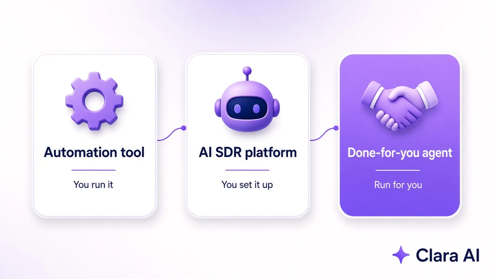

The best AI LinkedIn outreach agent for a B2B company is the one that turns LinkedIn into booked calls without adding work for your team. There are three types: automation tools you run yourself, AI SDR platforms you set up and manage, and done-for-you agents that are run for you. For busy founders and sales heads, a done-for-you agent usually wins.
Most "best LinkedIn tool" lists compare features: how many campaigns, how many message steps, how many integrations. A B2B sales head does not buy features. They buy qualified first calls with people who have the problem and the budget. So judge every option on one question: how many of the right conversations will this bring us each month, and how much of my team's time will it take?
That question splits the market into three groups. They can all send LinkedIn messages. What changes is who does the thinking, who does the work, and who is accountable when replies dry up.

These are browser extensions or cloud tools that send connection requests and message sequences on a schedule. They are cheap to start, but they only automate the clicking. Someone still has to define the ideal customer, build lists, write every message, watch limits and read every reply. Many send the same template to everyone, which hurts acceptance rates.
These add AI to the sequence. They can write a first draft of each message, sort replies and suggest next steps. They are more powerful, but they still need an owner on your team who sets them up, tunes the targeting, checks the messages and keeps the campaigns running. If that person is busy closing deals, the platform goes quiet.
Here the agent is set up and run for you. It works the way a good human prospector would: it opens LinkedIn in a browser, finds the right people, sends personal messages, follows up and reports to the manager on WhatsApp when someone is interested. The difference is that it does this every day without getting tired or distracted. This is how our AI LinkedIn Outreach Agent works, and why more B2B firms are choosing an AI agency over hiring for this kind of browser-based work.
| What matters | Automation tool | AI SDR platform | Done-for-you agent |
|---|---|---|---|
| Who builds the prospect list | Your team | Your team, with AI help | The agent |
| Who writes the messages | Your team | AI drafts, your team checks | The agent, in your voice |
| Who reads and sorts replies | Your team | Partly the AI | The agent, then hands over buyers |
| Your team's time each week | High | Medium | Low |
| Where you get updates | Inside the tool | Inside the platform | On WhatsApp |
| Best for | Teams with a spare outreach person | Teams with a sales ops owner | Founders and sales heads with no time |
If you are still deciding between software and outsourcing, our guide to LinkedIn automation vs a LinkedIn agency goes deeper into the trade-offs.
Whatever type you pick, ask every vendor these questions. A good answer to each one is a sign you will get real conversations, not just activity.
Track the funnel, not the activity. Messages sent is not a result. Look at how many of the right people were reached, how many accepted, how many replied, how many conversations were with real buyers and how many calls landed on your calendar. Compare a full month with the month before.
That is how we report our own work. For Haique Surfaces, the agent reached 345 people as of 21 Oct 2026, 107 accepted and 14 replied. For Sanjeet Ray it turned 149 invites into 12 conversations and 3 warm leads in October 2026. Both are small, honest numbers you can check against your own funnel. To see how outreach fits with follow-up, calling and reporting, read our guide to AI agents for B2B sales teams.
It is not the right choice for one-off campaigns, products sold to the public, or teams that only want cheap social media posting. It is also not a fit if you have no budget for a paid monthly service. It works best when one new client is worth a meaningful amount, because a handful of good meetings each month pays for the agent many times over.
If you sell from India, our page on LinkedIn lead generation services in India covers local options. If you also want buyers to find you on Google and in AI search, our AI SEO Agent publishes a helpful post every day. For anything else, we build custom AI agents around your process.
Clara AI is a team of 14 that builds and runs AI agents for 19 businesses. Book a free demo and we will show you the agent working on your own target buyers. If we are not a fit, we will tell you.